手搓魔法 · 元素能量牌 第五轮方案
设计稿（离线绘制，进游戏前会用游戏渲染器复核）：本页所有卡面用 Python 按游戏代码（cardart.lua 的 v5 绘制）1:1 复刻绘制：同一套颜色、同一张电光贴图、同样的标志形状和位置。机器上的游戏渲染器暂时被别的项目占用，空出来后会用游戏本身再渲染一遍复核。
一、问题诊断（上一轮为什么不行）
| 问题 | 本轮怎么改 |
|---|---|
| 装饰（电环）比信息（编号、颜色）还抢眼 | 层级固定为：① 编号 ② 元素颜色 ③ 有没有强化、是哪种 ④ 印章 / 特效。编号最大最白；电环降成中等粗细的实色能量带 |
| 叠加发光把颜色冲成白色；蓝紫太像；光晕渗到隔壁牌 | 重新定四个颜色，色相和亮度都拉开；环上只有一条细内沿接近白；光晕半径封顶（不超过环宽），不糊到下一张牌 |
| 徽章自带一堆颜色，跟元素色打架 | 元素颜色只给元素用。所有标志统一用中性的白金色光；只有数值上 魔攻 用蓝、倍率 用红（和计分气泡一致） |
| 8 张牌一直噼啪闪电 = 噪音 | 平时只有很慢的流光 + 一层很淡的电纹；选中才出现电流；计分时放电炸开。电只在有意义的时候出现 |
| 写实宝石徽章和能量环不是一个画风，像贴上去的 | 标志全部用和能量环一样的“发光线条”画；环在标志的位置开一个缺口，标志的光溢进环里，读起来是一体的 |
| 右下角的标志在手牌里被下一张盖住 | 手牌是后一张盖住前一张的右边，所以标志全部挪到左边：印章左上、强化左下、特效数值在左侧 |
二、元素颜色
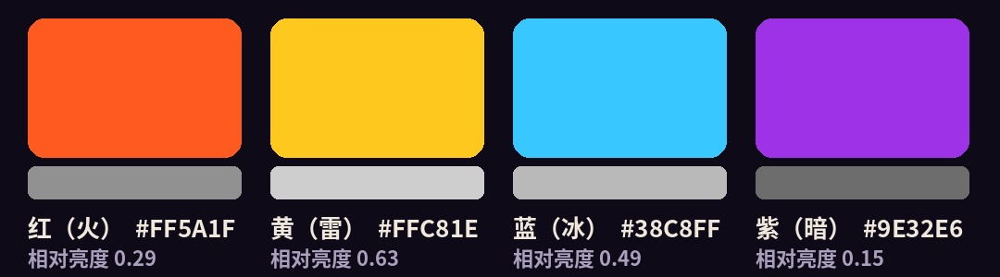
下面一条灰块是同一颜色去掉色彩后的亮度：四个颜色亮度依次是 黄 0.63 > 蓝 0.49 > 红 0.29 > 紫 0.15，看灰度也分得开。规则：这四个颜色只用于元素本身（环、编号描边、A 方案的元素符号）。
| 元素 | 主色 | 相对亮度 | 说明 |
|---|---|---|---|
| 红 | #FF5A1F | 0.29 | 偏橙的红，和紫拉开 |
| 黄 | #FFC81E | 0.63 | 最亮 |
| 蓝 | #38C8FF | 0.49 | 天蓝 / 青，和紫彻底分开 |
| 紫 | #9E32E6 | 0.15 | 偏品红的紫，最暗 |
三、两个方案：A 环底有元素符号 / B 没有
推荐 A。A 在环的最下方开一个小口，放该元素自己颜色的小符号（火焰 / 闪电 / 水滴 / 月牙）。好处：色弱玩家不靠颜色也能分元素（见第五节模拟图：红色盲、绿色盲下 红 和 黄 会变成深浅不同的黄，蓝黄色盲下 黄 和 紫 都偏粉，这时只有符号能一眼分开）；平时它很小，不抢编号。B 更干净，但完全靠颜色。
四、实机界面（8 张手牌，选中 A、K）
A有元素符号
B没有元素符号
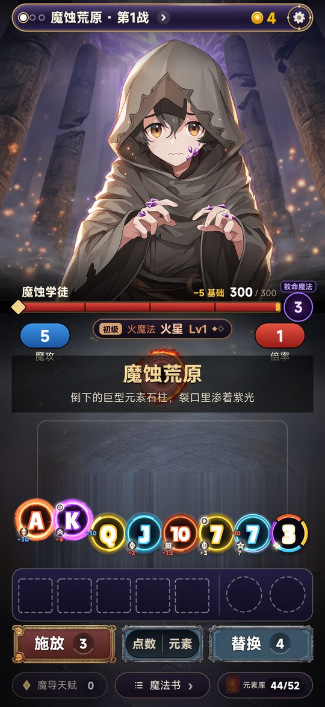
手牌区域 1:1（手机实际像素，3 倍屏，每张牌约 45 dp）
每张牌被后一张盖住右边，左边露出来的地方正好是 印章（左上）、强化（左下，下面是数值）、特效数值（左侧）。
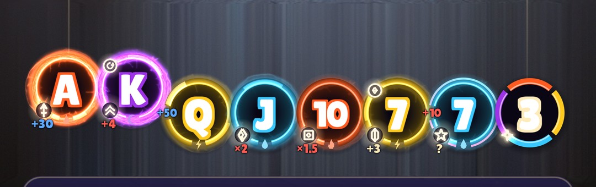
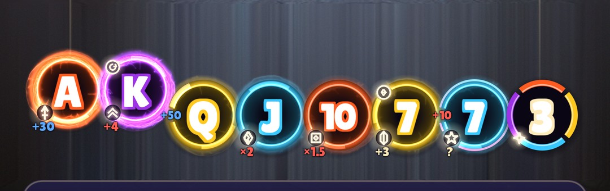
动效：平时 → 选中 → 计分（4 秒循环）
0–1.2 秒平时（几乎不动的慢流光）；1.2 秒选中 A、K（变亮、出现电流）；2.4 秒起依次计分放电。
A
B
五、辨识度检查
0.5 秒扫一眼（缩到手机上真实大小）
A
B
灰度 + 三种色盲模拟（Machado 2009 矩阵）
A
B
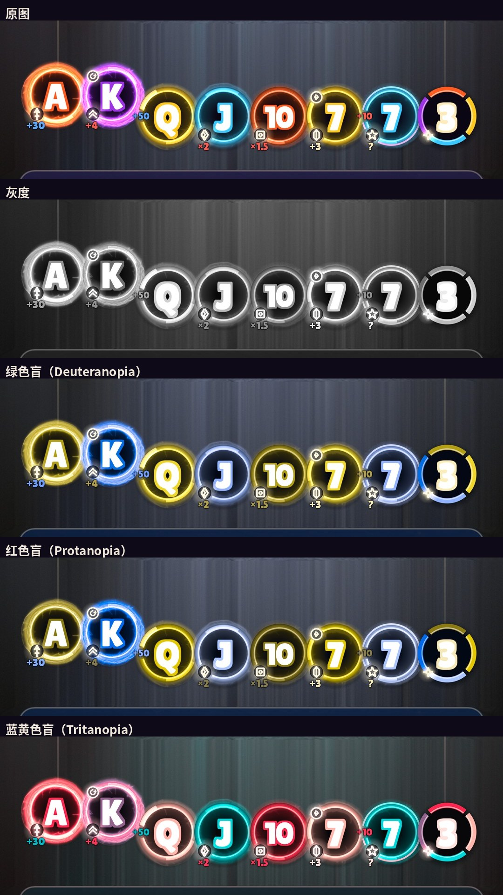
结论：编号在所有模拟下都最清楚；蓝 / 紫 在所有模拟下都分得开；红 / 黄 在红色盲、绿色盲下靠亮度区分（暗黄 vs 亮黄），黄 / 紫 在蓝黄色盲下靠亮度区分——A 方案的符号在这些情况下补上了第二条线索。
六、全部卡面 · 方案 A
基础：四色元素能量 + 特殊卡（J/Q/K）
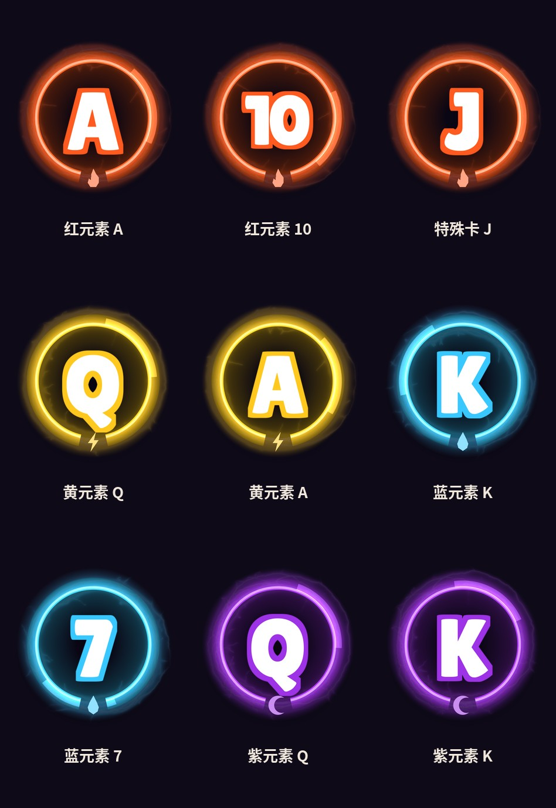
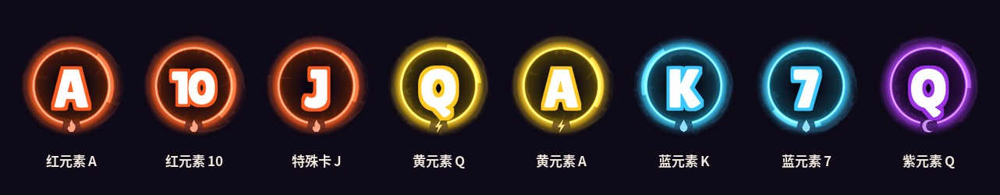
8 种强化（2 倍）
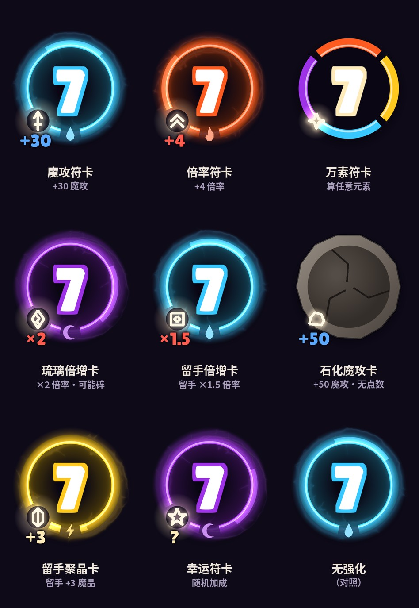
4 种印章 + 4 种特效（2 倍）
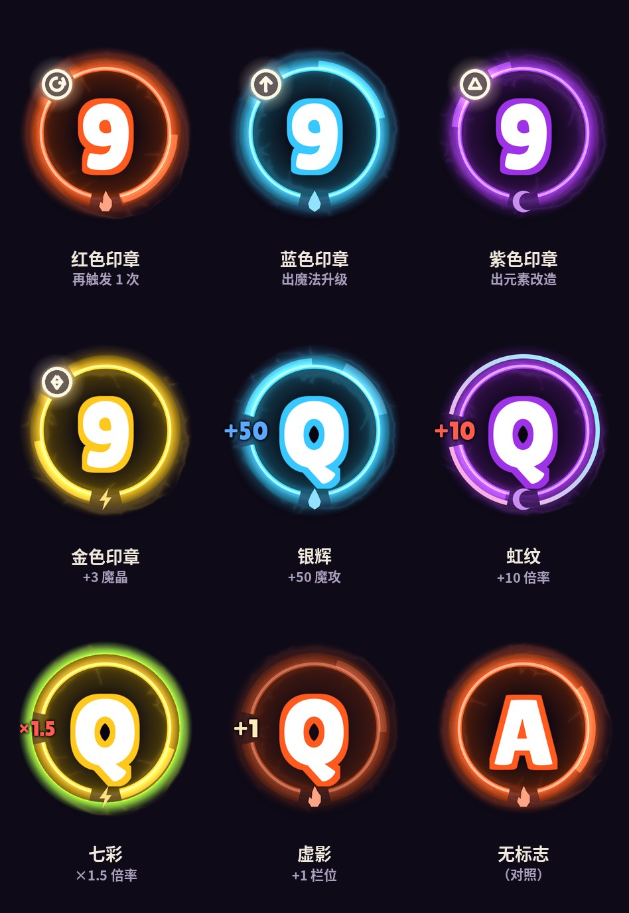
全部标志 · 手牌大小
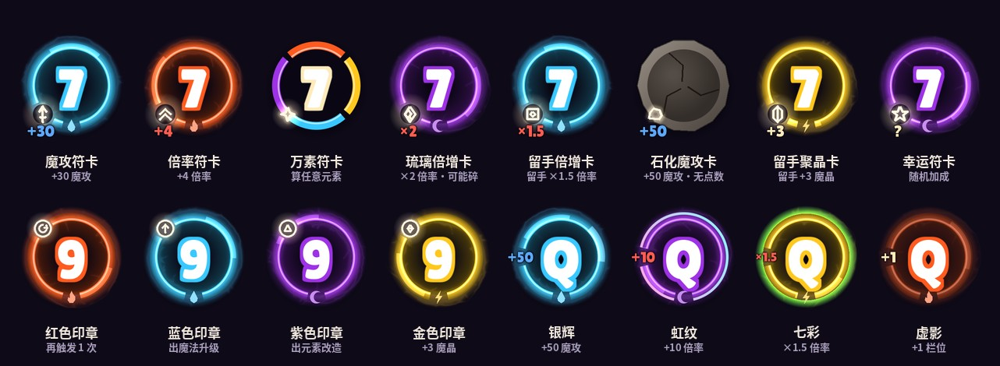
叠加示例（含 万素、石化）
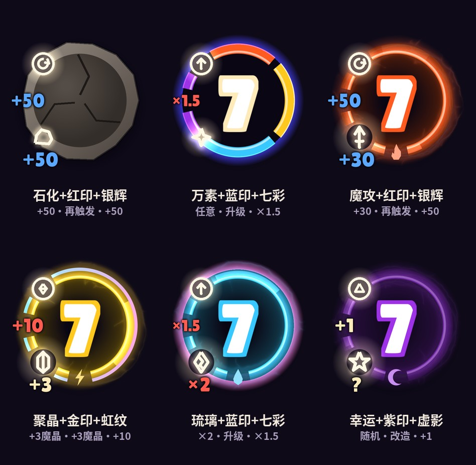
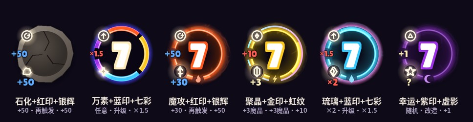
七、全部卡面 · 方案 B
基础
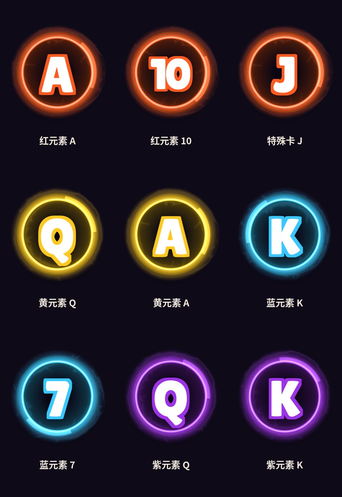
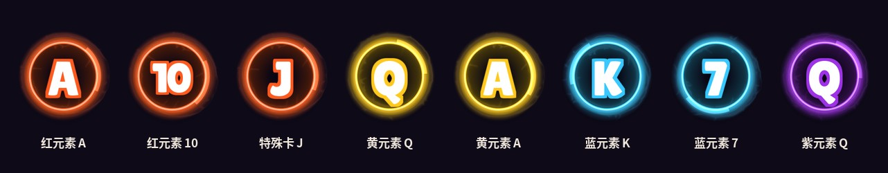
8 种强化（2 倍）
4 种印章 + 4 种特效（2 倍）
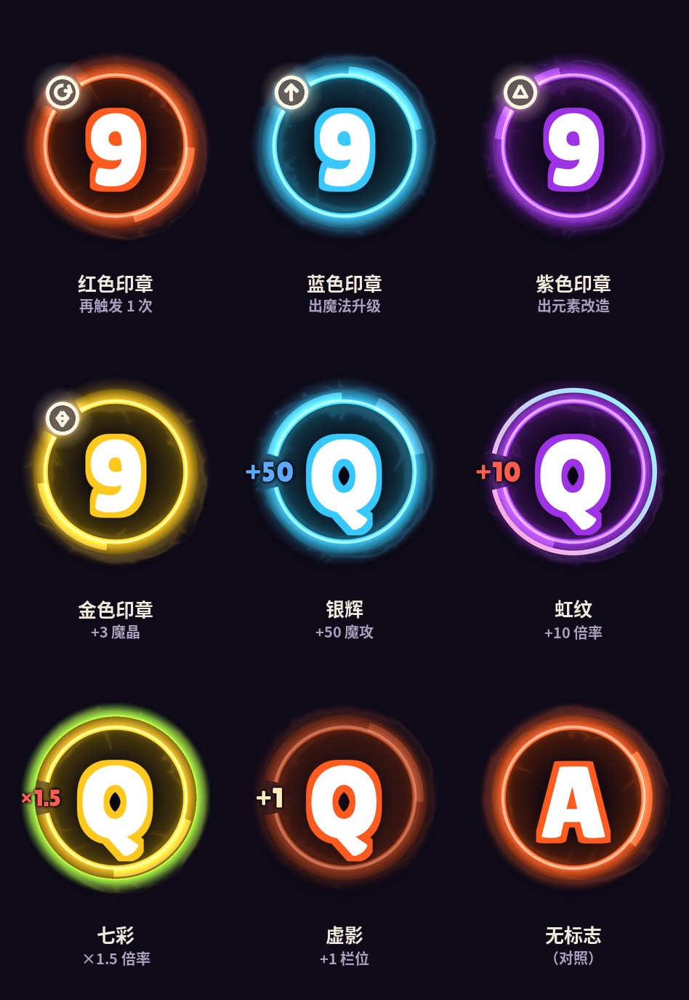
全部标志 · 手牌大小
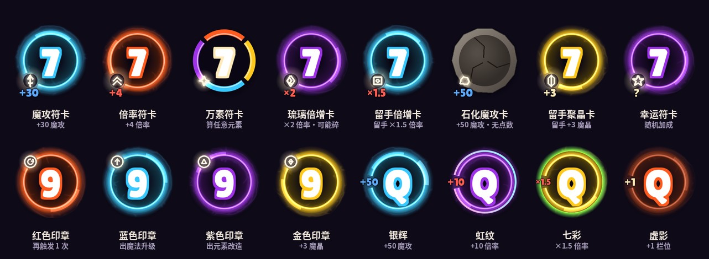
叠加示例
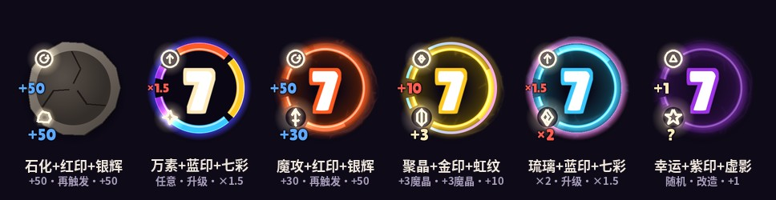
八、标志一览
| 类别 | 标志 | 位置 | 说明 |
|---|---|---|---|
| 魔攻符卡 | 长矛 + +30 | 左下缺口，数值在下方 | 形状区分，不靠颜色；线条、粗细、光和能量环一致 |
| 倍率符卡 | 双箭头 + +4 | ||
| 琉璃倍增卡 | 带裂纹的菱形 + ×2 | ||
| 留手倍增卡 | 钢板 + ×1.5 | ||
| 留手聚晶卡 | 魔晶碎片 + +3 | ||
| 幸运符卡 | 星 + ? | ||
| 万素符卡 | 四芒星；环分成四段，四个元素色清楚分开（不是渐变彩虹） | ||
| 石化魔攻卡 | 岩块 + +50；整颗变成哑光石头，不发光、不显示编号 | ||
| 印章 | 圆形徽记：红=循环箭头（再触发）、蓝=上箭头（升级）、紫=三角（改造）、金=魔晶 | 左上缺口 | 圆框表示“印章”，和强化的裸符号区分 |
| 特效 | 银辉=银光扫过环；虹纹=环外沿一圈虹彩；七彩=环外一圈变色光晕；虚影=半透明 | 环本身 + 左侧缺口的小数值 | 特效是“环的材质”，不额外加徽章 |
九、和上一轮、参考图对比
参考图

第四轮（被否）

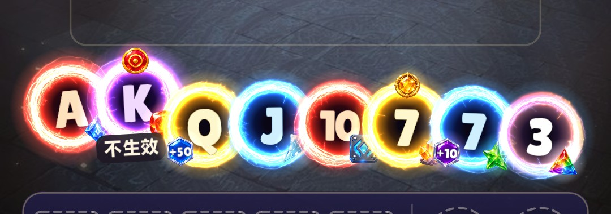
本轮（方案 A）
十、性能
| 现正式版（第二轮） | 第四轮 | 本轮 | |
|---|---|---|---|
| 局内每帧 Lua 绘制（8 张手牌） | 同机测 ≈ 第一版 +5% | 3.38 ms（第一版 3.47 ms） | 待游戏渲染器复核时实测 |
| 新增贴图显存 | — | 约 6 MB（电环 5 MB + 徽章 1 MB） | 约 5 MB（只要电环图集，徽章改成线条绘制，不再要徽章图集） |
本轮每张牌：平时 1 张电纹贴图 + 几条描边（比第四轮的 3 张贴图少），选中 / 计分时才多画 2–5 张贴图，预计不比第四轮慢。实测数字会在游戏渲染器空出来后补上。